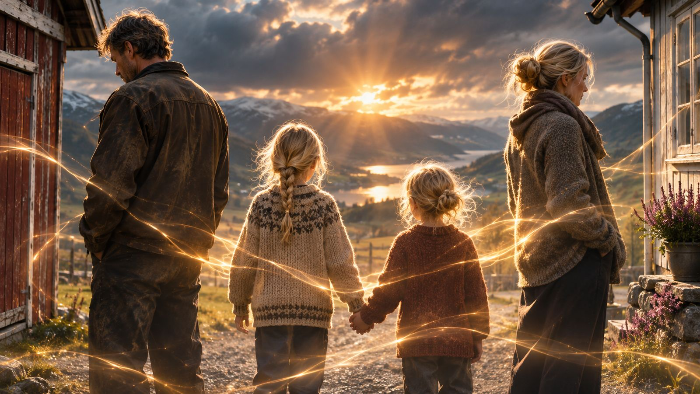
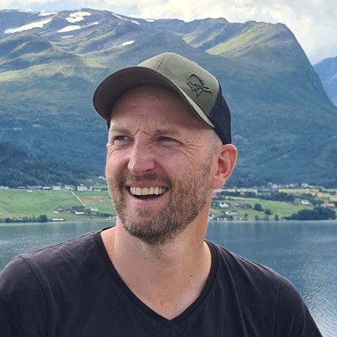

Frå ein stad bortanfor stormen ser Kael og Aera ein mann kjempe mot bølgjene. Dei kjenner Sigmund betre enn han nokon gong har kjent seg sjølv. Det dei veit om han, har han berre så vidt kunna ane.

Olav og Mari
Det som held ein familie saman, ser ein sjeldan.
Olav og Mari står på kvar si side av tunet og ser same veg. Mellom dei står ungane, hand i hand. Ein gard ved fjorden og eit heilt vanleg liv, med band som held og band som blir sette på prøve.
Synnøve
Kva blir att av oss når maskinene kan gjere jobben?
Grafen på skjermen peikar nedover. Orda frå podiet er mjuke: omstilling, effektivisering, ny teknologi. Synnøve veit kva dei betyr lenge før nokon seier det høgt.
Tre liv. Usynlege trådar. Éin plan.
Følg utviklinga
Kaels plan blir til akkurat no. Meld deg på nyheitsbrevet, så får du glimt frå arbeidet undervegs og beskjed den dagen boka kjem ut.
Om boka
Kaels plan er ein roman i tre delar om menneske som ikkje veit kor tett dei heng saman. Sigmund kjempar mot havet. Olav og Mari prøver å halde saman eit liv på garden. Synnøve kjenner grunnen gli unna på jobben. Og frå ein annan stad ser Kael og Aera det dei sjølve ikkje ser. Boka kjem først på norsk, som papirbok og e-bok, i 2027.

Om meg
Eg heiter Øyvind Løkling, og er bokregissøren bak Kaels plan.
I ein mannsalder har eg halde på med skriving, men lite har kome forbi den indre sensuren og ut av kladd-mappene på Dropbox. Våren 2026 sette eg difor i gong eit testprosjekt der eg let AI hjelpe meg. Det resulterte i ein snål, liten kortroman med namnet Randsone. Den trykte eg opp i 30 eksemplar og gav til venner og familie.
Med Kaels plan tek eg eit steg vidare. Dette blir ein fullverdig roman, i nynorsk drakt, til sals vinter/vår 2027. Eg har hovudregien, og ChatGPT er hovudskribent på prosjektet.
Eg håpar du vil følgje med på vegen.
Bokregissør og AI-samarbeid
Kaels plan er i all hovudsak skriven av ChatGPT frå OpenAI. Eg har hatt visjonen, styrt retninga og teke dei endelege avgjerdene om kva som skal stå att. ChatGPT har òg gjort svært mange val undervegs, ikkje minst i skissene til scenene. Det har vore eit salig samarbeid.
Rolla mi liknar mest på ein regissør, eller ein byggherre som står ansvarleg for heile bygget. Difor kallar eg meg bokregissør.
Claude frå Anthropic har vore med som ytre lesar og samtalepartnar, og har hjelpt meg med denne nettsida. Bileta er laga med ChatGPT. Eg er open om alt dette fordi kunstig intelligens er eit sentralt tema i boka.
Regissert av Øyvind LøklingI all hovudsak skriven av ChatGPT (OpenAI)